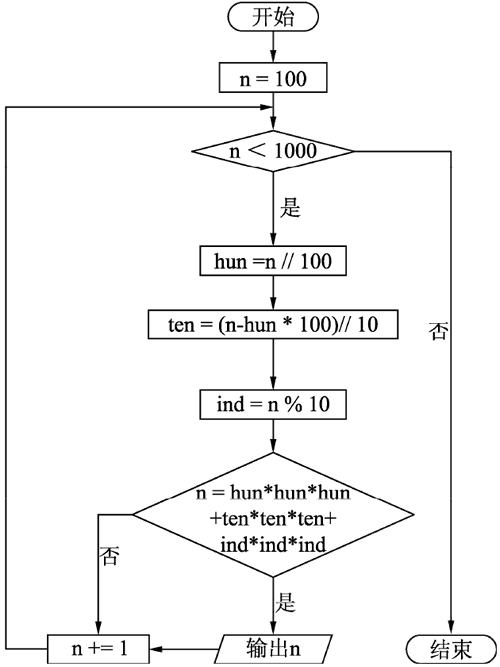

首页 > 编程笔记
Python求水仙花数详解
所谓的“水仙花数”是指一个三位数，其各位数字的立方和等于该数本身，例如，153 是“水仙花数”，因为 153=13+53+33。
对于每个位置上的数值将其拆分的算法有很多种，应根据不同情况选择不同的算法（对于同一问题不同算法的效率有时会相差很多）。
因此，Python 语言为我们提供了幂运算符“**”，例如求 5 的 3 次方，可以表示为 5**3，故我们可以换一种写法，程序代码如下：
问题分析
根据“水仙花数”的定义，判断一个数是否为“水仙花数”最重要的是要把给出的三位数的个位、十位和百位分别拆分，并求其立方和（设为 s），若 s 与给出的三位数相等，则该三位数为“水仙花数”，反之，则不是。算法设计
“水仙花数”是指满足某一条件的三位数，根据这一信息可以确定整数的取值范围是100～999。对应的循环条件如下：for n in range(100, 1000)
- 将 n 整除以 100，得出 n 在百位上的数字 hun。
- 将（n-hun×100）整除以 10（或将 n 先整除以 10 再对 10 求模，即 n//10%10），得出 n 在十位上的数字 ten。
- 将 n 对 10 取余，得出 n 在个位上的数字 ind。
- 求得这三个数字的立方和是否与其本身相等，若相等，则该数为“水仙花数”。
对于每个位置上的数值将其拆分的算法有很多种，应根据不同情况选择不同的算法（对于同一问题不同算法的效率有时会相差很多）。
确定程序框架
程序流程图如下图所示：

完整的程序
if __name__ == '__main__':
print("result is: ")
# 整数的取值范围
for n in range(100, 1000):
hun = n // 100 # 百位
ten = (n - hun * 100) // 10 # 十位
ind = n % 10 # 个位
m = hun*hun*hun + ten*ten*ten + ind*ind*ind # 求和
if n == m: # 各位上的立方和是否与原数n相等
print("%d \t" %n, end=" ")
程序运行结果为：
result is:
153 370 371 407
因此，Python 语言为我们提供了幂运算符“**”，例如求 5 的 3 次方，可以表示为 5**3，故我们可以换一种写法，程序代码如下：
if __name__ == '__main__':
print("result is: ")
for n in range(100, 1000): # 整数的取值范围
hun = n // 100 # 百位
ten = (n - hun * 100) // 10 # 十位
ind = n % 10 # 个位
m = hun**3 + ten**3 + ind**3
if n == m: # 各位上的立方和是否与原数n相等
print("%d \t" %n, end=" ")
程序运行结果为：
result is:
153 370 371 407
关注公众号「站长严长生」，在手机上阅读所有教程，随时随地都能学习。内含一款搜索神器，免费下载全网书籍和视频。

微信扫码关注公众号